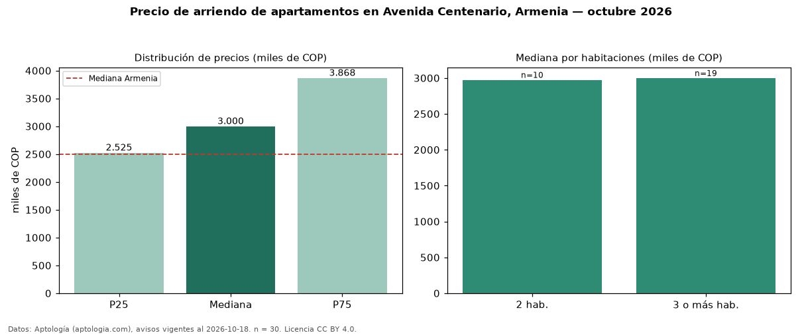

Precio de arriendo de apartamentos en Avenida Centenario, Armenia — octubre 2026
Con 30 avisos vigentes, el canon mediano de apartamentos en arriendo en Avenida Centenario, Armenia es COP 3,00 millones al mes. Eso es 20 % por encima de la mediana de Armenia para apartamentos (COP 2,50 millones). Por metro cuadrado, la mediana es COP 36.061/m² al mes (n = 30 avisos con área), 12 % por encima de Armenia (COP 32.222/m²). Con el precio por m² de venta del mismo segmento (COP 6,62 millones/m²), la rentabilidad bruta implícita es 6,5 % anual (aproximación con medianas de ofertas distintas). El área mediana anunciada es 88 m². El segmento con más oferta es el de 3 o más habitaciones (19 avisos, mediana COP 3,00 millones); pasar de 2 habitaciones a 3 o más habitaciones cambia la mediana +1 %. El estrato más frecuente es 5 (67 % de los avisos con estrato). La mitad central de los avisos va de COP 2,52 millones a COP 3,87 millones (razón 1,5), una dispersión moderada. Datos: Aptología (aptologia.com), CC BY 4.0 — https://www.aptologia.com/arriendo/armenia/avenida-centenario. Archivos: PDF, CSV con las cifras y gráfica PNG.

| Avisos únicos | 30 |
|---|---|
| Percentil 25 | COP 2.525.000 |
| Mediana | COP 3.000.000 |
| Percentil 75 | COP 3.867.500 |
| Mediana por m² | COP 36.061 |
Fuente: avisos vigentes de portales inmobiliarios recopilados por Aptología, deduplicados (mínimo 30 avisos únicos por celda). Precios pedidos, no cerrados. Fecha: 2026-10-18.